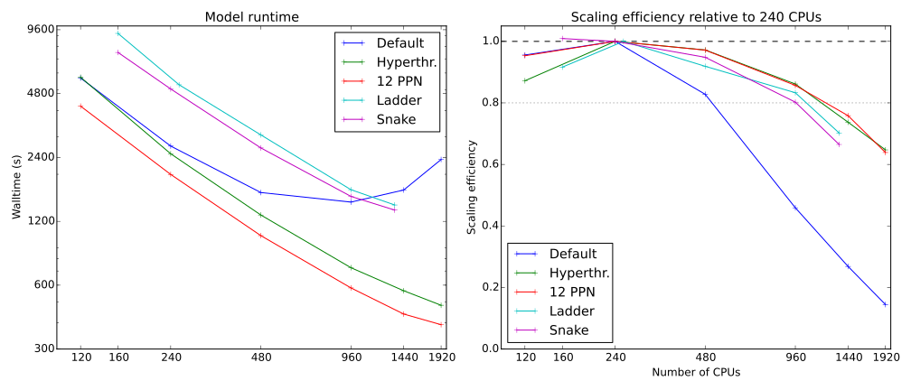

Scaling MOM from 480 to 10k
Marshall Ward
National Computational Infrastructure
Motivation

(Hallberg 2013)
What resolution do we need?
- CMIP5 was largely 1° (100km)
- ACCESS-CM 2 is pursuing $\tfrac{1}{4}$°
- ARCCSS is pushing $\tfrac{1}{10}$°
- ... but physically we probably need at least $\tfrac{1}{16}$°
We're gonna need a bigger computer
Scaling prehistory
Pre-Raijin: 960-CPU jobs stop working
--mpi_preconnect_mpi 1
Raijin debut: 0.25° global (960 CPU) runtimes increase by 3x
--npersocket 6--mca mtl mxm--mca coll fca
March 2014: Everything stops working
MXM_MEM_ALLOC=cpagescaused anomalous paging- Jobs run, but walltimes are volatile (up to ±50%)
Late 2014
Hyperthreading restored pre-Raijin performance:
But we could not run any jobs past 1920 CPUs
Scaling beyond 2k
Zeroth solution: Turn off OpenIB
mpirun --mca btl ^openib ...
Main loop scaling over TCP
TCP works, but is not viable beyond 2500 CPUs
Tracing the problem
Compile with-g and -traceback:
libmpiP.so <..> Unknown Unknown Unknown
mom51_sis_ompi184 <..> mpp_mod_mp_mpp_sy 223 mpp_util_mpi.inc
mom51_sis_ompi184 <..> xgrid_mod_mp_load 868 xgrid.F90
mom51_sis_ompi184 <..> xgrid_mod_mp_setu 1726 xgrid.F90
mom51_sis_ompi184 <..> flux_exchange_mod 820 flux_exchange.F90
mom51_sis_ompi184 <..> coupler_main_IP_c 1362 coupler_main.F90
mom51_sis_ompi184 <..> MAIN__ 428 coupler_main.F90
mom51_sis_ompi184 <..> Unknown Unknown Unknown
libmpiP.so <..> Unknown Unknown Unknown
mom51_sis_ompi184 <..> mpp_mod_mp_mpp_ma 14 mpp_reduce_mpi.h
mom51_sis_ompi184 <..> xgrid_mod_mp_setu 1540 xgrid.F90
mom51_sis_ompi184 <..> flux_exchange_mod 820 flux_exchange.F90
mom51_sis_ompi184 <..> coupler_main_IP_c 1362 coupler_main.F90
mom51_sis_ompi184 <..> MAIN__ 428 coupler_main.F90
mom51_sis_ompi184 <..> Unknown Unknown Unknown
Fails around L1540 and ~L868 of xgrid.F90
(For hanging jobs, use padb)
Source of the problem
do n = 0, npes - 1
if (.not. subset_rootpe(n)) cycle
call mpp_recv(ibuf2(1,n), glen=2, from_pe=pelist(n),
block=.FALSE., tag=COMM_TAG_1)
end do
if (nxgrid_local_orig > 0) then
do n = 0, npes - 1
ibuf1(1, n) = nsend1(n); ibuf1(2, n) = nsend2(n)
call mpp_send(ibuf1(1,n), plen=2, to_pe=pelist(n),
tag=COMM_TAG_1)
end do
end if
call mpp_sync_self(check=EVENT_RECV)
This is an all-to-all collective
...implemented with point-to-point comm.
Task Description
Coupler exchange grid data is pre-calculated and stored in a single serial vector: $$X = [x_1, x_2, x_3, ..., x_K]$$ which is divided and parsed by $N$ "worker" PEs, which:
- Determine target PE of each coupler data set $x_k$.
- Inform each PE how much data they are getting.
- Send the coupler data to target PEs.
Number 2 is the big problem!
The xgrid problem
Q: How do you tell someone that you don't need to send them a message?
A: You send them a message
$n_{ij}$ = # of bytes sent from rank $i$ to $j$
First solution: nsubset
Reduce the number of worker PEs: nsubset
&xgrid_nml
make_exchange_reproduce = .false.
interp_method = 'second_order'
nsubset = 16
/
"All-to-all" collective becomes "nsubset-to-all"
This works up to 5k, but fails at 10k
Second soluion: Fix the code
Instead of separate point-to-points, get MPI to do it:
call mpp_alltoall(nsend1, nrecv1)
call mpp_alltoall(nsend2, nrecv2)
(FMS wrappers to MPI_Alltoall)
Patch is currently being tested by GFDL
Community Service
And don't forget to share your work:
But we can do better
Other xgrid code fails at 10k if nsubset is not
tuned
do n = 0, npes - 1
nrecv = nrecv1(n) * nset1 + nrecv2(n) * nset2
if(nrecv==0) cycle
pos = recv_buffer_pos(n)
call mpp_recv(recv_buffer(pos+1), glen=nrecv, from_pe=pelist(n),
block=.FALSE., tag=COMM_TAG_2)
end do
do n = 0, npes-1
nsend = nsend1(n) * nset1 + nsend2(n) * nset2
if(nsend==0) cycle
pos = send_buffer_pos(p)
call mpp_send(send_buffer(pos+1), plen=nsend, to_pe=pelist(n),
tag=COMM_TAG_2)
end do
call mpp_sync_self(check=EVENT_RECV)
Someday, this will fail too
We should fix the whole thing with
MPI_Alltoallv
Scaling beyond 10k
IO Issues
At 15k we can initialize MOM, but cannot timestep
17 NetCDF errors:
FATAL from PE 4: NETCDF ERROR: NetCDF: Unknown file format
File=./INPUT/u_10.nc
FATAL from PE 4691: NETCDF ERROR: NetCDF: Unknown file format
File=./INPUT/t_10.nc
...
Five HDF5 errors:
HDF5: infinite loop closing library
R,D,G,A,S,T,D,G,S,F,A,S,T,F,FD,P,FD,P,FD,P,E,E,SL,FL,FL,FL,
FL,FL,FL,FL,FL,FL,FL,FL,FL,FL,FL,FL,FL,FL,FL,FL,FL,FL,FL,FL,
FL,FL,FL,FL,FL,FL,FL,FL,FL,FL,FL,FL,FL,FL,FL,FL,FL,FL,FL,FL,
FL,FL,FL,FL,FL,FL,FL,FL,FL,FL,FL,FL,FL,FL,FL,FL,FL,FL,FL,FL,
FL,FL,FL,FL,FL,FL,FL,FL,FL,FL,FL,FL,FL,FL,FL,FL,FL,FL,FL,FL,
FL,FL,FL,FL,FL,FL,FL
IO Issues
One IO runtime library error:
forrtl: severe (28): CLOSE error, unit 103, file "Unknown"
14973 instances killed (probably MPI)
forrtl: error (78): process killed (SIGTERM)
sh: -c: line 0: syntax error near unexpected token `('
sh: -c: line 0: `(chmod +x (null); (null) ;chmod -x (null)) &'
[r2291:28335] [[13059,1],8204] ORTE_ERROR_LOG: Error in file
./ompi/mca/pml/ob1/pml_ob1_recvreq.c at line 477
Additional Collective Issues
At 20k CPUs we cannot even initialize the model.
This is how mpp_global_field() gathers a global
field:
do n = 1,nd-1
! ...
call mpp_send(...)
end do
do n = 1,nd-1
! ...
call mpp_recv(...)
end do
We cannot execute this code at 20k
This is a job for MPI_Allgather
Potential warnings from FX10
The psi_compute diagnostic fails on the FX10
Contains two large point-to-point blocks like this:
if(myid_y < size_y) then
do ii = myid_y+1,size_y
call mpp_send(psiu2(isc:iec),lenx,pelist_y(ii))
call mpp_sync_self()
end do
end if
call mpp_sync_self()
if(myid_y > 1) then
do ii = 1,myid_y-1
call mpp_recv(psiu2(isc:iec),lenx,pelist_y(ii))
! Calculate psiu(:,:)
enddo
endif
Potentially a problem on Raijin (or the next machine)
Other work
Land Masking
| CPUs | Walltime (s) | CPU Hours |
|---|---|---|
| 960 | 720 | 192.00 |
| 761 (masked) | 730 | 155.73 |
Two benefits
- Reduce our CPU hours, increase efficiency
- Allow higher resolution runs at lower CPU counts
Tracking function calls
calls name
0.00 0.01 2976/137448 klevel_total_tracer_ [256]
0.00 0.01 3007/137448 ocean_vert_kpp_test_init_ [255]
0.00 0.01 3102/137448 total_mass_ [168]
0.01 0.02 5952/137448 compute_density_diagnostics_ [78]
0.01 0.02 6051/137448 total_tracer_ [100]
0.03 0.14 34224/137448 diagnose_sum_ [60]
0.06 0.30 74400/137448 cfl_check1_bgrid_ [87]
0.12 0.56 137448 mpp_global_sum_r8_2d_ [126]
0.01 0.55 137448/139026 mpp_sum_real8_scalar_ [134]
0.00 0.00 137448/143167 mpp_get_compute_domain2d_ [644]
0.00 0.00 137448/138675 mpp_get_global_domain2d_
Reducing MPI_Allreduce
Fixing an ineffiency in the potential energy (PE) diagnostic
reduced the number of MPI_Allreduce by 47%:
| Calls in PE | Total Calls | Wall time (s) | Percent runtime | |
|---|---|---|---|---|
| Before | 72000 | 137876 | 4.55 | 0.57% |
| After | 1440 | 67316 | 0.19 | 0.02% |
Unfortunately, it was not even 1% of run time.
PS: $T_{\text{MPI_Allreduce}}(960) \approx 60 \mu
\text{s}$ and $70560 * 60 \text{s} \approx 4 \text{s}$
Thanks to Dale Roberts (NCI)
Summary
- MOM implements too many collectives with point-to-points
This is not an option on Raijin - MOM runs at 18k CPUS on Titan
But not on Raijin - Analysing code beats system tweaking
Even if it runs on Titan - IO at 20k is looking scary
- Counting MPI calls can be misleading
TODO
Scaling bottlenecks
- Resolve input field errors at 15k
- Rewrite
mpp_global_fieldto useMPI_Gather - Integrate
MPI_Alltoallvinto xgrid
IO performance
diagnose_sum()collectives per output (not timestep)- MPI-IO integration
Miscellaneous
- Investigate sea ice and coupler performance
- Resolve
compute_psihangs on FX10